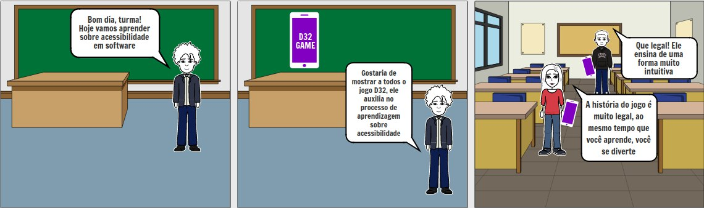
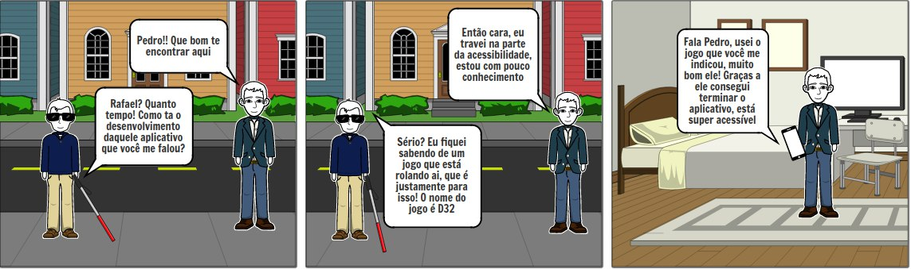

Storyboards
Introdução
O Storyboard é um artefato que surgiu no mundo do entretenimento, era um documento que rascunhava e organizava elementos gráficos, como por exemplo, uma série de ilustrações ou imagens, com o objetivo de pré-visualizar um filme, uma animação, ou partes selecionadas desses filmes/animações.
Esse artefato se provou muito útil para os engenheiros de software e/ou desenvolvedores, para que a ideia de um projeto de software saia do papel e se torne real. Para o desenvolvimento de sistemas, o Storyboard é interessante para contextualizar os stakeholders sobre o projeto.
Storyboard 1

Storyboard 2

Storyboard 3

Versionamento
| Versão | Data | Modificação | Autor | Revisor |
|---|---|---|---|---|
| 1.0 | 13/11 | Criação do documento e adição do primeiro Storyboard | João Gabriel Antunes | Marco Lima |
| 1.1 | 16/11 | Adição do segundo e terceiro Storyboard | Marco Antônio Lima | João Gabriel Antunes |